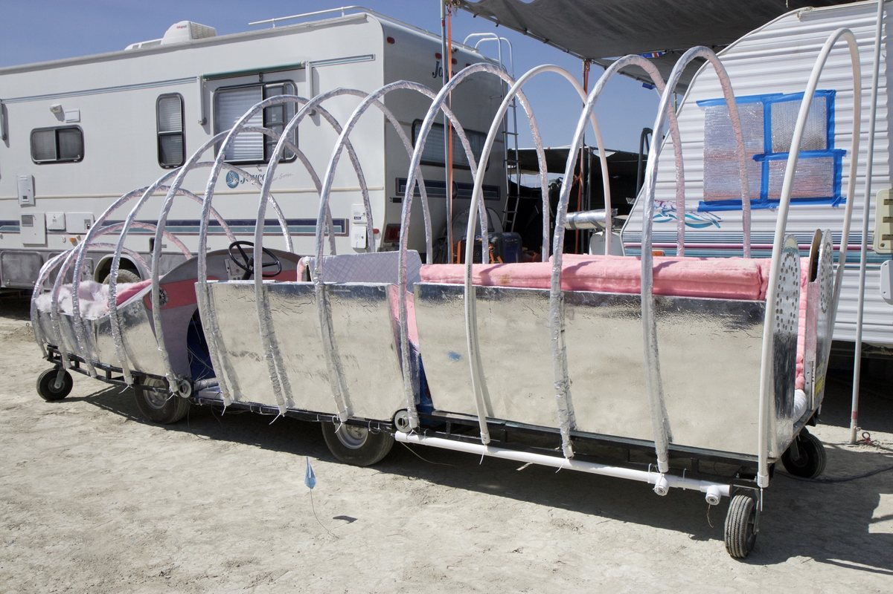
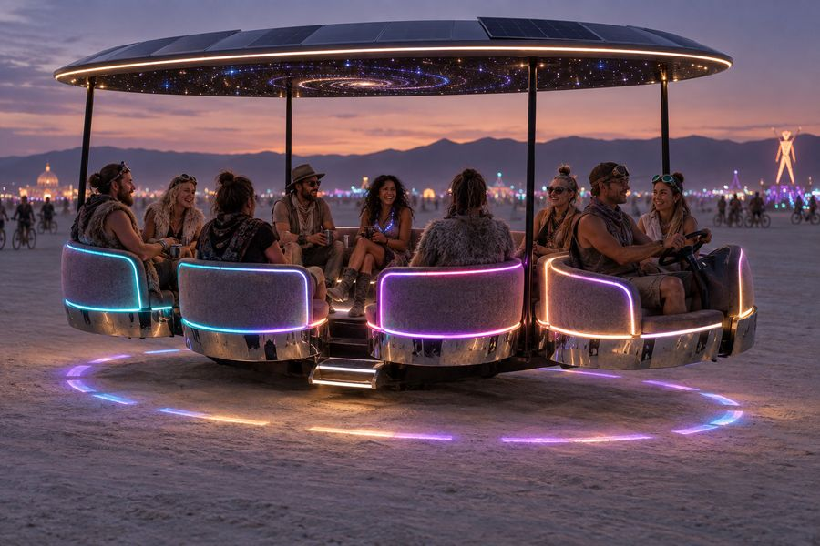
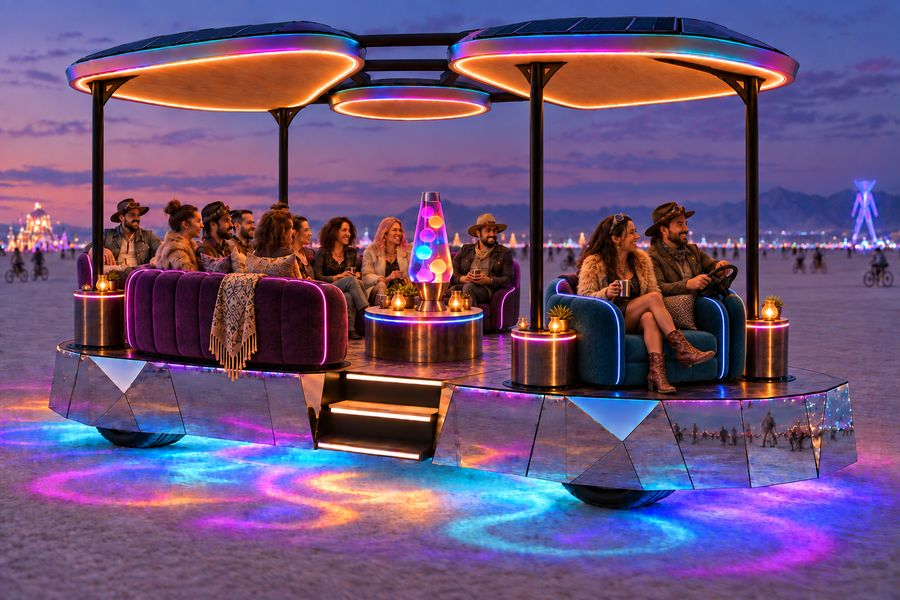
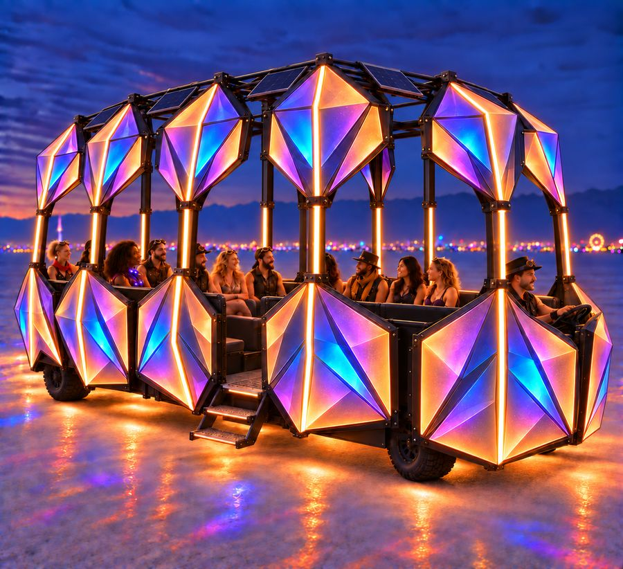
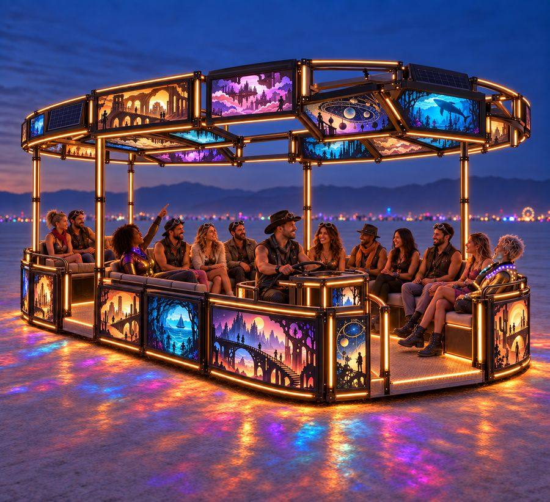
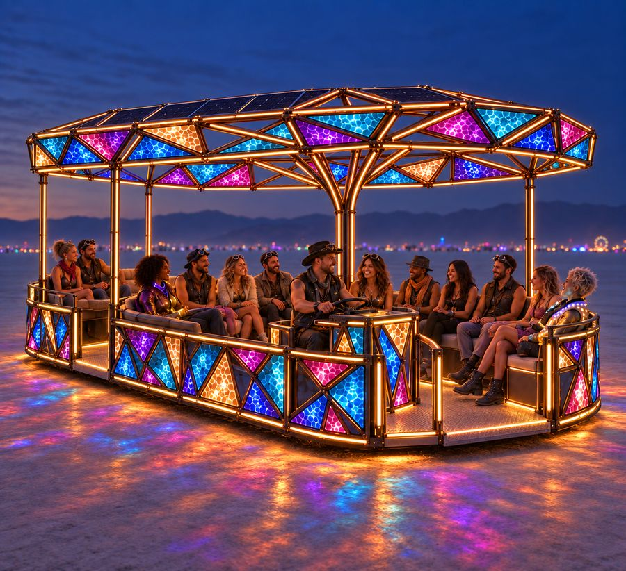
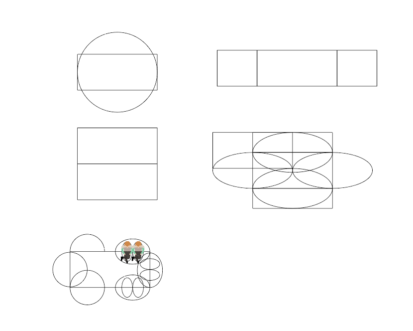

Design history · explorations, alternatives and decisions
How we got here
The plan of record is the cantilevered pods under a cloverleaf roof. This page keeps what came before it — the nine body concepts, the studies that compared them, the alternatives that were modelled and set aside, and a dated log of the decisions — so the reasoning is not lost when the plan moves on.
Where we started

The brief for the new car came out of that: a chassis that fits the trailer with room to spare, a demountable body, a real battery instead of four lighting batteries, and something better to sit on. Selina drew nine body concepts; the constraints (trailer, envelope, playa rules) were written down first and everything else was measured against them.
Selina's nine concepts
All nine were drawn to one scale in the notebook's volumetric study — top, side and front views with the same seated figure, seat block and trailer envelope — with dimensions read off the renderings. Design 2 is the plan of record; 3, 5, 7 and 9 stay as references for the roof rim and the pod lighting.





What the study showed: 1, 3, 4, 5, 6 and 7 are all "long" bodies that inherit today's trailer problem; 8 and 9 are round platforms on a central mast whose roofs cannot be demounted onto an open trailer without a lot of joints. Only 2 keeps the rolling chassis inside the 57″ ramp and moves every seat into a module. The comparison table in the notebook has each design's footprint, overhang past the ramp and deck, roof height and seat count.
Core shapes on the base

- Round. 33″ of cantilever all the way round, evenly, a ring beam on a central mast. Every seat outboard of the track, which is where the roll question lives.
- Long. No sideways cantilever, 40″ off each end. The safest for stability and the closest to today's car — and today's problem: it overhangs the trailer.
- Wide. 27″ of cantilever each side if centred. Sideways cantilever is the expensive direction; this one really wants a bolt-on outrigger axle.
- Cloverleaf. Four lobes ~40″ beyond the base. The most seating and the most demountable, but the widest to store and the hardest to keep the rail continuous. It came back as the roof shape.
- Pods — chosen. Six 48″ two-seaters, 24″ past the sides and 28″ past the ends: the smallest cantilever of the wide options, every seat a unit that comes off, the driver takes one pod.
Donor chassis considered: Taylor-Dunn B-248
An additive concept study, run alongside the custom-chassis work above rather than replacing it: could a used Taylor-Dunn B-248 burden carrier — the same family as today's car — supply the running gear instead of building a custom frame? The interactive model draws two layouts: retaining the donor body (its catalog 121″ body and 55″ wheelbase, with a 52″-wide carrier added for the six pods) and transplanting the running gear onto a proposed 120 × 52″ frame on a 72″ wheelbase.

Set aside: the mechanical capacity and upgrade review found that six pods at 300 lb per occupied pod exceed the donor listing's 2,450 lb payload at full occupancy under both body-weight scenarios modelled, and that a factory rating does not transfer to a new custom frame. Confirming a higher-capacity donor configuration would need the complete axle part numbers and serial-specific build record, which the listing does not establish.
Alternatives modelled and set aside
Most of these are still selectable in the models so they can be compared against the plan of record.
| Question | Set aside | Plan of record | Why |
|---|---|---|---|
| Pod mount | Bolted butt flange on the side of the chassis (4–8 bolts) — the sketch | 2″ hitch-receiver arms sliding into sleeves through the rail, pinned | The cantilever moment is carried by bearing, not bolt tension; a flange needs ⅜″ plate or gussets and still loosens; playa assembly is two pins. |
| Pod outline | D: a 48″ disc | U: 180° arc plus 12″ straight legs | Six tangent discs left no way on or off the car (found in the cardboard mockup); flat sides make a rectangular walkway slot for a stair module and stack two across the trailer. |
| Pod frame material | Aluminium (1 × 0.125″ 6061 with internal sleeves) ~90 lb; a wood shell on a steel base ~111 lb | Steel ¾ × 0.065″ tube ~128 lb | Not ready to switch: the look of external gussets and rivets; wood saves little unless it becomes a shell. Both stay in the model. |
| Pod wall | Smooth: one bent 24 × 96″ opal polycarbonate sheet | Faceted: six 30° bays, each a flat light module | A flat module is trivial and interchangeable; a curved one is a one-off. Every plate fits the 19 × 11″ laser bed. |
| Seat structure | Steel ribs and a ½″ ply pan; seat legs | Eleven birch slats in laser-cut combs; open under-seat storage | ~10 lb lighter, slats flex like a sprung seat, and the underside becomes storage. |
| Cup holders | Inside ladder-framed armrests; hanging off the arm end | One recessed sleeve in each end-console top | Nothing sticks out to be knocked; the console is the armrest. |
| Receiver arms | 2 × 2 × 0.188″ (25 ksi, 53 % of yield) at 26″ spacing | 2 × 3 × 0.188″ on edge (14 ksi) at 28″ | The review corrected the lever arm to the rail face; 28″ lets the tire chord clear the sleeves through the kneel. |
| Wheel placement | Wheels at the frame ends, receivers on top of the rail | Wheels under the side pods, receivers through the rail, wheel wells | Straddling the tire with the receiver arms lets the frame kneel ~5.6″ instead of ~1″. |
| Tires | ATV 20 × 10-10 (wide and soft for playa) | Carlstar 23 × 10.50-12 turf on 12 × 8.5 rims | Matches the QS205 car hub's 12″ rim; rated for the corner load. |
| Motor | Scooter-variant QS205; geared go-kart motors; AGV drive units; tractor motors | QS205 car variant, direct drive | Direct-drive hubs already package the many-pole, high-torque, low-rpm motor in a wheel with a dirt tire. |
| Steering | Both knuckles assigned one angle (animated); rack behind the axle; 10″ scrub; a leg beside the tire | Solved fixed-length linkage; rack at the ball-joint station; 8″ kingpin inboard at 12°; legs inboard | The animated version hid a rail clash at 10° of steer and −11.6° of bump toe; a leg beside the tire limited lock to ~14°. |
| Kneel | 8″ claimed | ~5.6″ with every stop listed | The D2500 has 3.5″ of stroke through a 0.625 motion ratio; the tire meets the sleeves at 5.6″. |
| Brakes | Regen plus a parking lever only | Foot service brake on four hydraulic calipers plus a mechanical parking brake | Regen fades at walking pace and does nothing on a full pack; the DMV checks for both. |
| Battery | Used Nissan Leaf modules (Gen 1 or Gen 2); a whole salvage 24 kWh pack reconfigured 7S6P | New EVE LF280K LFP cells, 2 × 16S | Leaf pouch cells are heat-sensitive under a deck at 105 °F and lose on price per real kWh, weight and volume. |
| Roof | Disc on a mast (the first rendering); rectangle on four posts and a mast; petals, one per pod | Cloverleaf: six leaves as two halves on eight posts | One lit shape over all the pods that still follows their outline, with the posts at the leaf valleys for sight lines. All three remain in the model. |
| Tow limit | The rental contract's 2,500 lb | 5,000 lb, the used Cruise America RV's rating | 2,500 lb is below the empty trailer, so it never governed; the real question is what rides in the RV. |
| Transport | Drive the whole assembled car up the ramp (today) | Bare chassis drives up; sled, pods, stairs and roof travel as modules | The ramp opening is 57″; the sled and loose modules can ride in the RV to make the tow weight. |
{kind=link}
Decision log
| Date | Decision or event | Where |
|---|---|---|
| 2026-09-11 | Repo started: design notebook with the constraints, chassis concept, corner module, battery decision (new LFP over used Leaf), core shapes and the volumetric study of all nine concepts; a 1:12 laser-cut cardboard model generator for design 2. | notebook, model/podcar_model.py |
| 2026-09-11 | Design 2, the cantilevered pods, chosen as the direction to detail. Pods mount on hitch receivers rather than a bolted flange. | loveseat.md "Mounting" |
| 2026-09-11/12 | Pod ergonomics derived from the home loveseat; seat 17″, rim 25″, riders face the car. Ergonomics model built. | loveseat-3d |
| 2026-09-12 | Pod structure decided: 1″ (then ¾″) steel tube frame welded to the receiver arms, Baltic birch shell, faceted lit wall of swappable light modules, end consoles with recessed cup holders, tilted backrest. Build model with weight, cost and cut list. | loveseat.md "Structure", loveseat-build |
| 2026-09-12 | 142 lb was too much to lift: slats instead of a pan, ⅛″ modules, ⅜″ floor, ¾″ tube → ~118 lb. Aluminium and wood-shell options kept, not chosen. | loveseat.md "Weight" |
| 2026-09-12 | Cardboard mockup: six tangent pods leave no way on or off the car. Pods become U-shaped; stair modules in the walkway slots; trailer stacking view added. | loveseat.md "Outline: U, not D" |
| 2026-09-12 | Driver pod defined: the U turned round, legs forward with a pedal floor, one throttle pedal, F/N/R lever, 12″ gate, 52″ wide, left-hand controls. | loveseat.md "Driver pod" |
| 2026-09-12 | Wheels moved under the side pods with the receiver arms straddling the tire so the car can kneel deeply; ATV tires tried; chassis frame, air shocks and wheel/motor design started in frame-3d. | frame-3d |
| 2026-09-12 | Drivetrain design review: thirteen findings (motor variants, steering not solved, kneel overstated, weights undercounted, service-brake gap, battery box too small, energy arithmetic, tow limit, guard rules, stale receiver notes). | drivetrain-review.md |
| 2026-09-13 | Response to the review: steering solved from fixed-length rods, kingpin 8″ at 12°, kneel 5.6″, receivers 2 × 3 at 28″, rails 14″ in, weights from the drawn members plus a parts list, five load cases, foot brake added, sled 50 × 21 × 10.5″, tow target 5,000 lb, guardrail rule clarified. Drivetrain study (drivetrain-3d) with buy / fabricate / machine colouring and a verification script. | response |
| 2026-09-13 | Roof: cloverleaf (six leaves as two halves on eight posts, lit rim, two flex panels per leaf) added as a third roof style beside the rectangle and petals; ottoman benches in the aisle. | frame-3d |
| 2026-09-13 | Plan of record settled: cantilevered pods with the cloverleaf roof. Site restructured into this plan and the system pages; models given a simple / advanced mode. | home |
| 2026-09-13 | Taylor-Dunn B-248 donor chassis studied as an alternative to the custom frame: retained-body and running-gear-transplant layouts modelled, then a mechanical capacity review found six occupied pods exceed the donor's listed payload. Set aside; did not change the plan of record. | B-248 donor study, review |
| 2026-09-13 | Lighting given its own system page. The power budget was rebuilt from the current car's measured behaviour — ~3,300 WS2815 through most of a night on one 100 Ah 12 V LiFePO4, ≈ 140 W, ~42 mW per LED, a 10 % average power fraction — instead of the notebook's 0.3–1 kW: ~4,700 LEDs proposed (rim and skirts at 30/m, no addressable underside wash), ~200 W average, ~2.2 kWh a night. The models' 0.08 W per LED "typical" is to be halved once a SmartShunt night confirms it. | lighting |
The working documents
- Design notebook — constraints, chassis concept, corner module and torque, battery, core shapes, the volumetric study (editable
DESIGNSarray), transport, open questions. Revised 13 September after the review. - loveseat.md — the pod design notes: mounting, load case, ergonomics, structure, weight, U outline, driver pod, kneel, open items. (Markdown; opens as text.)
- drivetrain-review.md and drivetrain-review-response.md — the 12 September review and the item-by-item response.
- model/drivetrain/README.md — the drivetrain study's files, exports and verification script.
- sketches/ — Selina's nine renderings, the core-shape and pod-layout sketches, the pod-mount sketch, the pod-vs-loveseat plan, and photos of the current car.
- Git history — every revision of every file above.